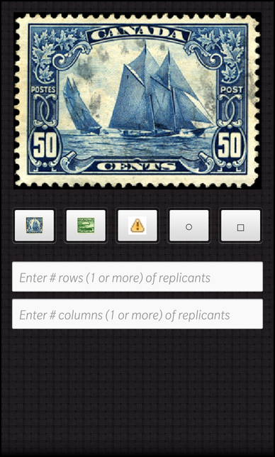
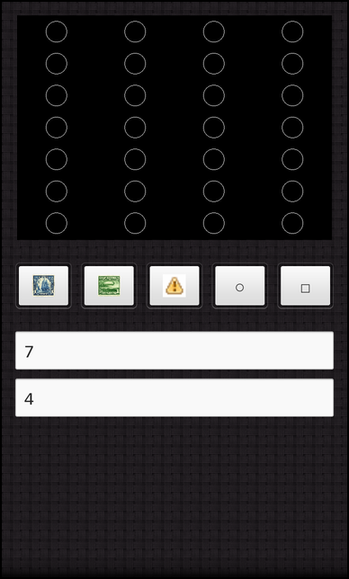
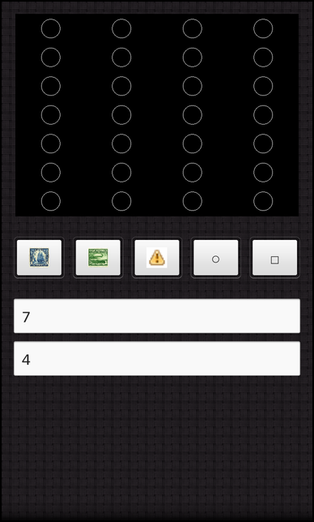

Scratch Pad
Files:
- scratchpad/assets/ScratchpadScrollView.qml
- scratchpad/assets/main.qml
- scratchpad/assets/720x720/ScratchpadScrollView.qml
- scratchpad/src/app.cpp
- scratchpad/src/app.h
- scratchpad/src/draw.cpp
- scratchpad/src/draw.h
- scratchpad/src/main.cpp
- scratchpad/scratchpad.pro
- scratchpad/translations/scratchpad.pro
Description
The Scratch Pad example demonstrates how to take a geometrical shape or image and replicate it, using N rows and M columns to produce a new resulting image based on N*M.
 
 

Overview
In this example we'll learn how to use the QPainter and QImage class' to replicate and create new images based on some given input.
The UI
The sample application provides an UI consisting of the image, image buttons to allow for various image selections and two TextFields that allow the user to input the row and column data values.
ImageView { horizontalAlignment: HorizontalAlignment.Center preferredHeight: 500 preferredWidth: 700 minWidth: 700 minHeight: 500 image: _scratchpad.image }
This is the ImageView that displays the resulting image based on user input and selection.
// Container with images to select Container { topMargin: 50 layout: StackLayout { orientation: LayoutOrientation.LeftToRight } Button { imageSource: "asset:///images/Blue_20Nose_20Thumb.png" onClicked: { _scratchpad.object = "images/Blue_20Nose_20Thumb.png" } } Button { imageSource: "asset:///images/Zeppelin_Thumb.png" onClicked: { _scratchpad.object = "images/Zeppelin_Thumb.png" } } Button { imageSource: "asset:///images/warning.png" onClicked: { _scratchpad.object = "images/warning.png" } } Button { text: "\u25CB" // unicode char for white circle onClicked: { _scratchpad.object = "circle" } } Button { text: "\u25A1" // unicode char for white square onClicked: { _scratchpad.object = "square" } } }
Whenever the user clicks one of these buttons, the scratchpad's object property is set and the image is updated and modified according to the new image selection and user inputs(rows, columns).
TextField { topMargin: 50 hintText: qsTr("Enter # rows (1 or more) of replicants") inputMode: TextFieldInputMode.NumbersAndPunctuation onTextChanged: { _scratchpad.rows = text } } TextField { hintText: qsTr("Enter # columns (1 or more) of replicants") inputMode: TextFieldInputMode.NumbersAndPunctuation onTextChanged: { _scratchpad.columns = text } }
The rows and columns TextField set the ScratchPads properties respectively. Once these have been set, the image is automatically updated in the onTextChanged signal handler and invoke the updateImage() of the App object when setColumns() or setRows() is invoked.
The App class
The App is the central class of the application that creates the UI and provides the properties that allow for image selection and replication.
App::App() : m_rows(1) , m_columns(1) { QmlDocument *qml = QmlDocument::create("asset:///main.qml"); qml->setContextProperty("_scratchpad", this); AbstractPane *root = qml->createRootObject<AbstractPane>(); Application::instance()->setScene(root); }
In the constructor the member variables are initialized and the UI is created.
void App::setObject(const QString &object) { if (m_object == object) return; m_object = object; emit objectChanged(); updateImage(); }
This method is called when the object property is updated whenever the user clicks on one of the buttons, with the new image selection as the argument. This in turn invokes updateImage() which reflects the changes through the ImageView.
void App::setRows(const QString &text) { bool ok = false; int rows = text.toInt(&ok); if (!ok || (rows <= 0)) rows = 1; if (m_rows == rows) return; m_rows = rows; emit rowsChanged(); updateImage(); } void App::setColumns(const QString &text) { bool ok = false; int columns = text.toInt(&ok); if (!ok || (columns <= 0)) columns = 1; if (m_columns == columns) return; m_columns = columns; emit columnsChanged(); updateImage(); }
These methods are invoked in the onTextChanged() signal handler, when its sets the scratchpad objects rows/columns property, using the property callback mechanism. Each of these methods invokes updateImage() after setting their respective values, which will reflect the changes in the ImageView.
QSize App::desiredReplicantSize() const { const int numPixelsX = workingImageSize.width() / m_columns; const int numPixelsY = workingImageSize.height() / m_rows; return QSize(numPixelsX, numPixelsY); }
The method calculates the image size, before its replicated, so that the final image is created according to the requested rows*column size.
void App::updateImage() { QImage replicant; if (m_object == QLatin1String("circle")) replicant = Draw::drawCircle(desiredReplicantSize()); else if (m_object == QLatin1String("square")) replicant = Draw::drawSquare(desiredReplicantSize()); else { // Load from file replicant.load(QString::fromLatin1("app/native/assets/%1").arg(m_object)); replicant = replicant.scaled(desiredReplicantSize()); } const QImage finalImage = Draw::replicate(workingImageSize, replicant, m_rows, m_columns).rgbSwapped(); const bb::ImageData imageData = bb::ImageData::fromPixels(finalImage.bits(), bb::PixelFormat::RGBX, finalImage.width(), finalImage.height(), finalImage.bytesPerLine()); m_image = bb::cascades::Image(imageData); emit imageChanged(); }
This method decides how to set the proper image, by generating the url location or calling the methods to draw the geometrical shape, and calling into the Draw namespace to provide the final image result.
Draw namespace
This namespace is responsible for drawing the geometrical shapes and producing the image replications.
QImage Draw::drawCircle(const QSize &size) { // Create an image of the appropriate size. // The underlying data is reference counted so is cleaned up as needed. QImage image(size, QImage::Format_RGB32); image.fill(Qt::black); // Pick an arbitrary size for the circle const int centerX = size.width() / 2; const int centerY = size.height() / 2; const int radius = std::min(centerX, centerY) * 2 / 3; const int diameter = radius * 2; // Draw the circle! QPainter painter(&image); painter.setPen(Qt::white); painter.drawEllipse(centerX-radius, centerY-radius, diameter, diameter); return image; }
This method calculates the (x,y) coordinates, the radius and diameter based on the provided image size to draw a circle using the QPainter class.
QImage Draw::drawSquare(const QSize &size) { QImage image(size, QImage::Format_RGB32); image.fill(Qt::black); // Pick an arbitrary size for the square const int centerX = size.width() / 2; const int centerY = size.height() / 2; const int w = size.width() * 2 / 3; const int h = size.height() * 2 / 3; // Draw the square! QPainter painter(&image); painter.setPen(Qt::white); painter.drawRect(centerX - w/2, centerY - h/2, w, h); return image; }
This method calculates the (x,y) coordinates, the width, and height based on the provided image size to draw a square using the QPainter class.
QImage Draw::replicate(const QSize &destinationSize, const QImage &replicant, int numRows, int numCols) { if (numRows <= 0 || numCols <= 0) return QImage(); // illegal call QImage destination(destinationSize, QImage::Format_RGB32); const int numPixelsX = destinationSize.width() / numCols; const int numPixelsY = destinationSize.height() / numRows; const int extraPixelsX = destination.width() - (numPixelsX * numCols); const int extraPixelsY = destination.height() - (numPixelsY * numRows); const int offsetX = extraPixelsX / 2; const int offsetY = extraPixelsY / 2; // Fill the extra pixels and overwrite the last contents // in case there is any transparency destination.fill(Qt::black); // Replicate QPainter painter(&destination); for (int rows = 0; rows < numRows; ++rows) { const int y = offsetY + rows * numPixelsY; for (int cols = 0; cols < numCols; ++cols) { painter.drawImage(offsetX + cols * numPixelsX, y, replicant); } } return destination; }
This method calculates the size of the final image and the x/y offsets on this image required for placement of the original image(scaled version) according to row*column pattern.